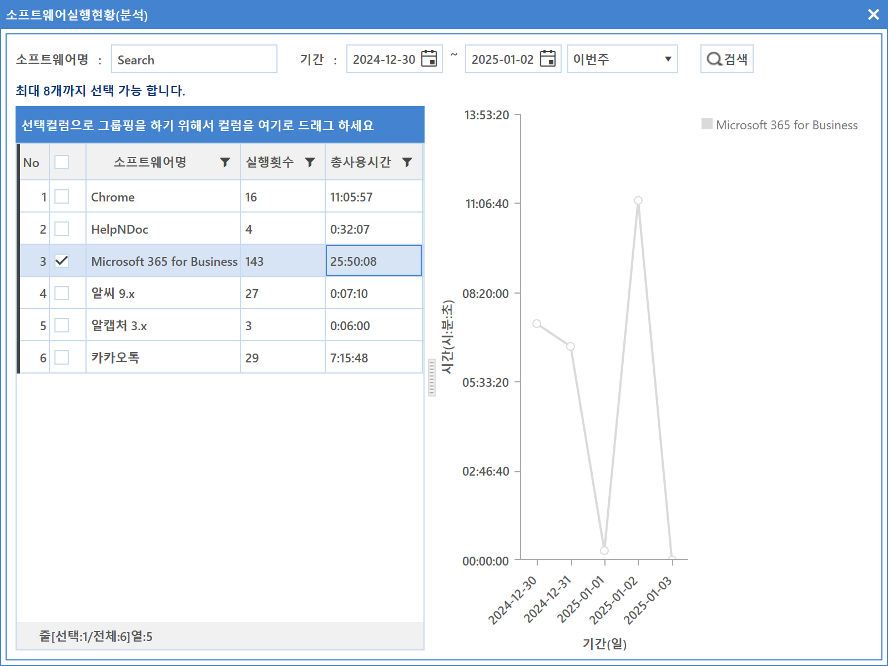

5-2-4. 실행현황(분석)
5-2-4. 실행현황(분석)
Source: https://www.sweeper.or.kr/etc/manual/524.html
5-2-4. 실행현황(분석)


소프트웨어별 지정한 기간동안, 사용변화 추이를 분석하여 나타납니다.
사용방법
- 소프트웨어명에서 분석을 원하는 해당 소프트웨어명을 입력합니다.
- 기간을 설정한 뒤 검색 버튼을 클릭합니다.
- 조회되는 소프트웨어를 클릭하면 우측에 그래프로 사용 추이가 나타납니다. 동그란 그래프 포인트를 선택하면 사용시간이 표시됩니다.
다른 설정 방법
- 실행현황 메뉴를 선택합니다.
- 해당 소프트웨어를 선택한 뒤 마우스 우클릭하여 설치현황 메뉴를 클릭합니다.

- 소프트웨어 실행현황(분석) 화면이 팝업되면 검색 기간을 설정하고 검색버튼을 클릭한 뒤 조회되는 소프트웨어를 클릭하면 그래프로 나타납니다.

참고사항
본 메뉴에서는 프린트 기능이 제공되지 않습니다.
© Copyright SWeeper Inc.. All Rights Reserved